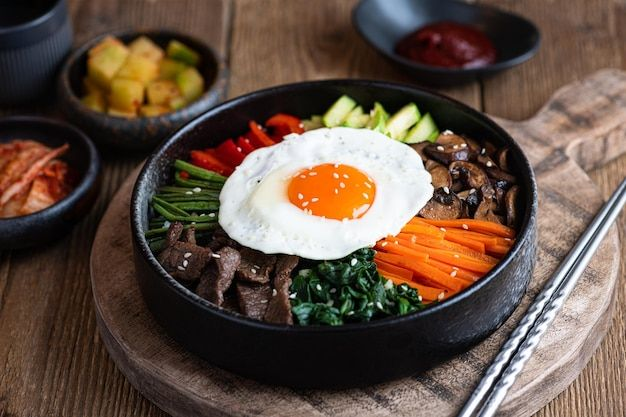

Origem:corea
O bibimbap é um prato muito popular na Coreia e pode ser facilmente encontrado em restaurantes coreanos espalhados pelo Brasil. Enquanto existe, sim, uma receita clássica, mas o bibimbap é feito no dia a dia com o que as pessoas tem na geladeira. Ou seja, você pode usar os legumes, verduras e carnes que estiverem rolando na sua geladeira por um tempo e você não sabe o que fazer com eles. Seria a versão coreana do nosso arroz de forno, só que sem ir ao forno!
O primeiro passo é colocar 4 colheres de óleo de gergelim para aquecer em uma panela funda. Em seguida, entre com o alho e deixe fritar levemente. Depois, adicione a cenoura, a abobrinha e o cogumelo e frite em fogo alto por alguns minutos. É importante ser em fogo alto para que nem a abobrinha nem o cogumelo soltem tanta água. Depois que os estiverem bem cozidos, entre com o espinafre ou a couve e faça a mesma coisa por alguns minutos.
Quando todos os vegetais estiverem bem refogados, retire da panela e acrescente o arroz. Deixe fritar em fogo baixo por alguns minutos, mas cuidado para não deixar queimar! Enquanto está fritando, misture a última colher de óleo de gergelim com o shoyu, o soju ou saquê e a pimenta ou páprica, formando um molho homogêneo. Quando o arroz estiver levemente frito, adicione o molho e misture bem, deixando cozinhar por 1 minuto. Retire do fogo.
Em uma frigideira, frite o ovo como de costume, mas o ideal é deixar a gema levemente mole. Enquanto isso, em uma cumbuca, espalhe o arroz no fundo e coloque os vegetais por cima. Finalize com o ovo e a cebolinha, e sirva enquanto está quente. Antes de comer, misture tudo que está na cumbuca, como os coreanos fazem!